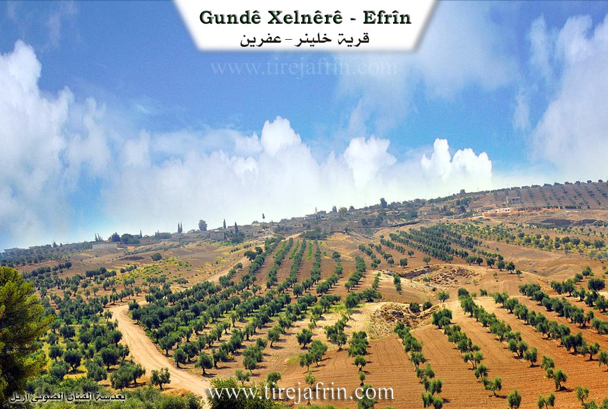
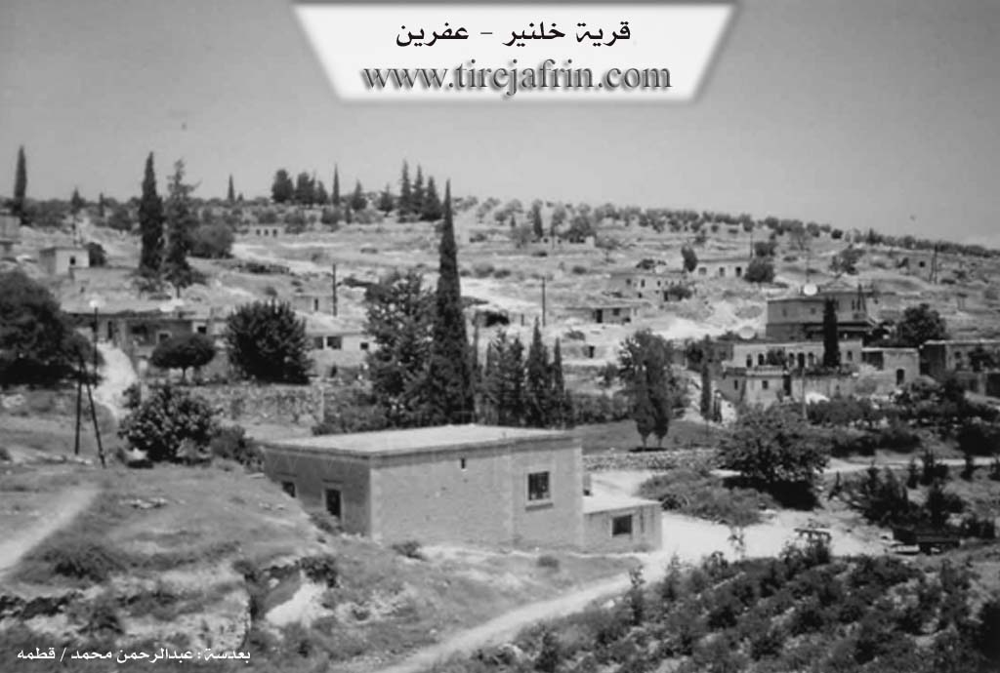

General Information
Nahiya (Subdistrict)
Efrîn
Also Known As
Xalnêrê, Xelnerê, Xelîlê, Çeqelî, النيرة, خلنير, خلنيريه
Tribes
Gowan, Kirmanc, Reşwan, Rişwanî, Çeqelî
Families, Clans, etc.
Brahîm, Ebdo Neso, Ebdîn E'sê, Elko, Elkê, Elî Bakîr, Hadira, Hesen Efendî, Mala Alkê, Mala Evdî Hesen, Mala Evdî Nesê, Mala Evdî Ûsê, Mala Hesen, Mala Xelê, Mehmê, Mihemed, Mihemedê Qûşû, Mistefa, Qewşon, Qoşo, Qûqê, Seydek, Çeqelî

Photos


Basic Information about Xelnêrê
Source: Ax û Welat
Etymology: Derived from the founder Xelîl who was called Xelê Nêr by his brother Bekir after surviving a storm in a cave
Foundation Date/Period: Approximately 300 to 350 years ago
Caves: Şikefta Kilo, Şikefta Sûsê, Şikefta Qişlê, Şikefta Salê, Şikefta Şêx Reşîd, Şikefta Soreqizê, Şikefta Îsê, Şikefta Qewix, Şikefta Çolê Quteter
Number of Caves: 60
Hills: Sirta Xewêc, Sirta Serîncê, Gaza Tehta
Shrines: Qere Baba, Sare Qîzê, Sirta Qendîl
Ruins: Qişle
Trees: Dara Qerebaba
Wells: Bîra Heşê Xwa, Bîra Mala Evdî Ûsê
Other Landmarks: Baniya Dirêj, Kevrê Qendîl
Source: Afrin 366
Foundation Date/Period: 400-500 years
Number of Caves: 100
Source: Afrin Zeyton
Etymology: Named after the first settler Khal combined with 'Neer' (meaning manhood or virility)
Foundation Date/Period: 300-400 years ago
Caves: Şikefta Kindî, Şikefta Qebşo, Şikefta Metbexê
Number of Caves: 50
Hills: Sirta Musange, Sirta Merxê, Sirta Saraqê, Sirta Qara Baba, Sirta Xocê, Cirnê Hesen, Sirta Zil Xabûdrê, Qaraca Evdek, Kurta Hemê
Ruins: Kela Merwan
Wells: Bîra Kolan, Bîra Hecî Şêxo
Other Landmarks: Hîrî Çaqalon, Gelî Pîlê, Gelî Elî Çawîş, Gelî Hesenê Îbê, Gelî Pîrê, Gelî Qişlê, Gelî Zûmû, Gelî Şêx Hesen, Gelî Ne'îskê, Gelî Ebdê Xelîl, Gelî Newala Kêrgiya
Summaries
I. Summary from TirejAfrin Site (English) of Xelnêrê
Source: https://www.tirejafrin.com/site/kura%20afrin%20markaz-%20xelnera.htm
The following text appears in the book جبل الكرد (عفرين) دراسة جغرافية Çiyayê Kurmênc (Efrîn): A Geographical Study by د. محمد عبدو علي Dr. Mihemed Ebdo Elî: Xelnêr, El-Niyara, 1196 inhabitants, 470 hectares, 7 km, 465 m.
Xelnêr: A Kurdish nickname for a proper name derived from Xelîl.
It is currently a small village, situated on the eastern slopes of Mount Heştiyan. The deep Wadî Xelnêr (Xelnêr valley) descends from its vicinity, sloping eastward toward the plain. It was an important population and social center until the middle of the twentieth century, then most of its inhabitants migrated, especially to the city of Efrîn. Currently, only a few families remain in it.
The following text appears in the book عفرين .... نهرها وروابيها الخضراء Efrîn... Her River and Her Green Hills by the writer عبدالرحمن محمد Ebdulrehman Mihemed from the village of Qetme:
Xelnêr is a village in Mount Heleb (Mount Kurmênc), following the subdistrict of the villages of the center and region of Efrîn, Heleb governorate. It is a small village situated on the lower slopes of three limestone mountains connected to each other: the western slope of Mount Ziyaret to the east, the southern slope of Mount Seryê Xwace to the north, and the eastern slope of Mount Qere Baba to the west, to the northwest of the city of Efrîn.
It is bordered to the north by a very high mountain range planted with olive trees and vines and the village of Cûyêq. To the south, it is bordered by a deep valley and a high mountain range planted with olive trees and the village of Maratê. To the west, it is bordered by a very deep valley and a high mountain range planted with olive trees and vines and the village of Darkîr and Gazî Tepê. To the east, it is bordered by a deep waterway planted with olive trees up to the neighboring village of Kefer Şîl.
The number of its houses is about 25 houses, and its age is about 400 years. Its traditional dwellings are stone and mud with wooden roofs and have a beautiful appearance, while the modern ones are concrete and composed of trimmed and beautiful stones. The reconstruction of the village is very old; the reason is the presence of several caves in the middle of the village and on the western side specifically. As for the old houses, they have been subjected to extinction due to the migration of their inhabitants to the city of Efrîn and Heleb and the lack of maintenance.
An electricity network is available in the village, as well as a paved road coming from the village of Kefer Şîl to the center of the village, a school composed of two rooms, and a mosque. Its inhabitants work in the cultivation of olives and vines and the raising of sheep and goats.
Village Mukhtar: Sidqî Sîdo Qoşo.
Sources
Book: جبل الكرد (عفرين) دراسة جغرافية Çiyayê Kurmênc (Efrîn): A Geographical Study by د. محمد عبدو علي Dr. Mihemed Ebdo Elî.
Book: عفرين .... نهرها وروابيها الخضراء Efrîn... Her River and Her Green Hills by عبدالرحمن محمد Ebdulrehman Mihemed from the village of Qetme.
Preparation and execution:
Manager of Tirej Efrîn site: Ebdulrehman Hacî Osman
20/12/2013
II. Summary of Xelnêrê from Ax û Welat
Source: https://www.youtube.com/watch?v=xXr4JQFyAJc
The village of Xelnêrê is located approximately ten kilometers northeast of Efrîn. It is historically defined by its extensive network of caves which served as the primary dwellings for its inhabitants for centuries. The history of the village dates back roughly 300 to 350 years. According to local oral history recounted by Bavê Luqman, the village was founded by a man named Xelîl. He was one of three brothers; the other two settled in Jûqê and Keferşîlê.
The naming of the village stems from a specific event involving Xelîl. He was a nomad who brought his flock to this mountainous area. During a severe storm, Xelîl sheltered his sheep inside a cave and blocked the entrance to protect them. His brother Bekir, who lived in Jûqê, came searching for him fearing the worst. When Bekir shouted his name and found Xelîl alive with his flock intact, he proclaimed "Tu Xelîl î, û tu Xelê Nêr î" which implies he was a tough or brave ram of a man. The name evolved from Xelîl Nêr to Xelnêrê.
The social structure of Xelnêrê consists of several long standing families including Mala Xelê, Mala Evdî Nesê, Mala Alkê, Mala Evdî Ûsê, and Mala Evdî Hesen. These families lived entirely in caves until the early 20th century. The transition to masonry housing began in 1925, though the caves remained in use for storage and livestock. There are approximately 60 caves in and around the village, with notable ones named Şikefta Qişlê which was used by the military during the Ottoman era, and Şikefta Şêx Reşîd.
Religious life and local traditions are centered around specific shrines and landmarks. The shrine of Qere Baba is located near a massive oak tree known as Dara Qerebaba. Locals, particularly women seeking fertility or cures for ailments, visit this site on Wednesdays to drive nails into the tree or tie fabrics to it as part of their vows. Another significant site is Sare Qîzê, the tomb of a girl, located near Kevrê Qendîl and Sirta Qendîl. Villagers gather here for communal prayers and rain rituals.
The economy of Xelnêrê was traditionally based on raising black sheep and goats, as well as wheat and barley farming. Olive cultivation is also central to the village, with trees over a century old. In 1949, a man named Mehemedê Qûşo established the first mechanical olive press in a cave, which operated for 25 years. Beekeeping is another enduring practice, with locals like Reşîd using traditional smoke tools called kurik to manage hives. Water was originally sourced from mountain springs that flowed through the valley, but after these dried up roughly 70 years ago, the villagers relied on hand dug wells such as Bîra Heşê Xwa and Bîra Mala Evdî Ûsê.
II. Summary of Xelnêrê from Afrin 366
Source: https://www.youtube.com/watch?v=p8ql7hae3vo
The village of Xelnêrê (also referred to as Xelêrê) is situated in a valley depression within the Efrîn region of Syria. Geographically, it is located near the city of Efrîn, bordered by the villages of Maratê to the side and Cûqê behind it. The host also notes plans to visit the nearby village of Keferşîlê.
Historically, local elders estimate the village was founded approximately 400 to 500 years ago. However, there is mention of ancient ruins and traces that suggest human presence in the area could date back a thousand years. The inhabitants identify socially with the Kirmanc and Gowan tribal confederations.
The defining characteristic of Xelnêrê is its extensive system of caves. An elder states that there are one hundred caves (sed şikat) within the village boundaries. In the past, before modern stone houses were common, these rock-cut structures served as dwellings and gathering places. They were particularly valued for their coolness during the summer months. Each family historically possessed their own "şikat" (cave/dwelling). While the village once had natural springs (kanî), they have since dried up. Today, the residents rely on deep wells (bîr), some drilled to depths of 100 to 158 meters, to irrigate their olive groves and vegetable gardens containing radishes, spinach, and eggplants. There are also ancient cisterns (sarinc) carved into the rock, though some have fallen into disrepair.
The village is described as well-developed, thanks in part to the contributions of its residents. A notable figure, Rifetê Xelnêrê, a local oil merchant, personally funded the paving of the village roads. Another prominent resident, Mihemed Qewşo (known as Ebû Yûsif), donated the land for the village school in 2010. Ebû Yûsif, who belongs to the Qewşon family, is depicted as a generous elder who distributes water from his well to neighbors and cultivates the land around the school with olives and produce. Other families mentioned in the village include the Mihemed and Brahîm families. The documentary also features interactions with workers from the nearby village of Kurzêlê who come to Xelnêrê for construction work, highlighting the economic connections between the villages in the Efrîn region.
II. Summary of Xelnêrê from Afrin Zeyton
Source: https://www.youtube.com/watch?v=w28vuS2KYis
The village of Xelnêrê (also known as Khalneer), situated in the Efrîn region, is a historic settlement founded approximately 300 to 400 years ago. According to local oral history, the village was established by an ancestor named Khal. The name Xelnêrê is said to be a compound of his name and "Neer," implying "the virility or bravery of Khal." The village is uniquely characterized by its geology; it is often called the "Village of Caves" due to the presence of roughly 50 caves. Before the construction of modern stone houses, the early inhabitants lived in these caves and used them to shelter their livestock. Some caves, such as Şikefta Metbexê, Şikefta Kindî, and Şikefta Qebşo, bear specific names, while others were used for industry. Notably, one large cave served as a traditional olive press (ma'ser) owned by the family of Mihemedê Qûşû, dating back to the 1940s.
The residents of Xelnêrê identify as Kurds of the Reşwan tribe, specifically the Çeqelî branch. Speakers emphasize that unlike neighboring villages which may host multiple tribes, Xelnêrê, along with the nearby villages of Cûqê and Keferşîlê, shares a unified lineage, describing themselves as relatives (Xalitî) rather than a confederation of strangers. The community has a long agricultural tradition, initially relying on vineyards and livestock before shifting focus to olive cultivation about 110 years ago.
Water scarcity played a significant role in the village's history. For a long time, the community relied on distant water sources until the digging of Bîra Hecî Şêxo (also known as Bîra Kolan). A local legend recounts that after repeated failures to find water, a bride in the village pointed to a specific spot on the ground and offered to pay the costs of digging. Water was found there within two days. Nearby stands an ancient tree planted by a villager named Ebdî Ûsê, who placed it near the well to ensure its survival.
The village is geographically defined by a complex network of hills and valleys. It is surrounded by heights such as Sirta Musange, Sirta Qara Baba, and the highest point, Sirta Zil Xabûdrê (435m). The terrain is cut by numerous valleys, including Gelî Qişlê, Gelî Hesenê Îbê, and Gelî Newala Kêrgiya (Valley of Rabbits). Historical memory also touches on conflicts and ancient settlements, with one elder reciting a narrative involving Kela Merwan and an ancestor figure named Xelîl, highlighting the community's deep-rooted connection to the land and its history of resilience.
II. Summary of Xelnêrê from Multi Channel
History: Xelnêr is an ancient village situated five kilometers northwest of Afrin, overlooking the Cûm plain. The original Kurdish inhabitants settled there over 600 years ago, prior to the Ottoman era. According to the mukhtar, the village name might mean the large world, though another theory suggests it stems from the figure Xelîlê Nêr. In its earliest days, residents lived in the 47 ancient caves surrounding the settlement, such as Qepşo, Salan, and Sûsê. Historically, the region was governed by the Hesen Efendî family before the arrival of ancestors like Elî Bakîr. Elî Bakîr fled from Bêsnî in modern day Turkey after a fatal conflict with his cousin and subsequently established his lineage in the area.
Social Structure: Xelnêr shares deep social and kinship ties with the neighboring villages of Ciwêq and Kefirşîl, all connected to the Çeqelî tribe. Today, the village consists of over 100 original families, alongside internally displaced families from places like Letamnê in Syria. The oldest residing families include the Ebdo Neso and Elko lineages, followed by the Çeqelî family established by Elî Bakîr. Other prominent local families mentioned include Qoşo and Mistefa. The villagers are known for their strong communal solidarity, preserving a tight knit and protective social fabric shaped by their rugged mountain environment.
Sacred and Notable Sites: The geography of Xelnêr features distinct landmarks. Aside from the named caves, the village overlooks the Geliyê Tizbê valley. While there are no running surface springs today, the community historically relied on an ancient Arab well known as Bîra Erebî, which provided icy cold water for both villagers and livestock. Additionally, the village has a 150 year old olive press. Previously operated using horses and later mechanized, this press served Xelnêr and surrounding villages. Even older olive presses were once located inside the local caves.
Reputation and Notable Features: The local economy relies heavily on agriculture. While elders recall earlier days of growing wheat, barley, and lentils using sickles, modern Xelnêr boasts over 70000 olive trees, including the Şokî variety, alongside pomegranates and sumac. The locals maintain deep cultural traditions. Residents like Yûsif Xelnêrî craft traditional wooden items such as the Amzik smoking pipe and miniature models of the Biziq from olive and apple wood, drawing inspiration from the surrounding nature and the distant views of Kefirşîl. Musical heritage is also kept alive by locals like Şukrî, who plays traditional Afrin folklore tunes like Eyşê, Zeynebê, and Çiftetellî on the Biziq and Tembûr.
II. Summary of Xelnêrê from Multi Channel 2
The village of Xelnêr is a historic settlement located in Çiyayê Kurmênc within the greater Efrîn region. According to a village elder named Emîn, the community is approximately four hundred years old. The etymology of Xelnêr originates from a local legend about a shepherd named Xelîl. Caught in a severe snowstorm, Xelîl sheltered his flock inside a cave and kept them alive by feeding them chopped tree branches. When the snow finally melted, villagers spotted the smoke from his fire and found him alive. They praised him with the phrase Xal mêr, meaning brave uncle. Over time, this title evolved into the village name Xelnêr.
The social structure of Xelnêr is built upon several foundational lineages. The earliest inhabitants included the Elkê and Ebdîn E'sê families. Later, members of the Çeqelî tribe, which belongs to the larger Rişwanî confederation, established a significant presence and grew to encompass about twenty households. About a century ago, other families such as the Qûqê, Seydek, and Mehmê migrated from surrounding areas and integrated into the village. Today, families like the Hadira lineage are especially known for their strong communal solidarity.
Xelnêr is most famous for its subterranean landscapes, boasting around eighty ancient caves. The most prominent is Mehsereya Mihemedê Qûşê, a massive cave that historically functioned as an olive press and community kitchen. In the past, residents from neighboring villages such as Miskê, Aşûra, Cûqê, and Keferşîlê traveled by mule to process their olives in this cave. Other notable caves include Şikefta Salo, Şikefta Qişlê, Şikefta Sûsê, and Şikefta Hemberê. These caves have also provided refuge during times of war, from the historical Seferberiyê mobilization era to recent conflicts, sheltering dozens of families from aerial bombardments.
Agriculture is the lifeblood of the village, with olive cultivation acting as the core identity of the people. An agricultural worker named Mihemed, originally from Kîdê, emphasizes that olive trees require profound care but serve as the economic and spiritual foundation of the region.
The village maintains unique and tight social bonds. During Eid celebrations, the entire village gathers at the cemetery. After paying respects to their deceased relatives, residents form a massive continuous line to greet every single person, ensuring no one is left out. The community also prioritizes education and modernization. A young man named Ciwan recently collaborated with a German organization to build a social center and garden for women and children. Furthermore, despite its small size, Xelnêr has produced numerous professionals, including doctors like Asmihan and Hûriye, as well as lawyers and engineers who now live in cities like Şam and Heleb.
Transcriptions and Subtitles
| Source | Video | Subtitles | Transcript |
|---|---|---|---|
| Afrin 366 1 | Watch Video | Download SRT | View Transcript |
| Afrin Zeyton 1 | Watch Video | Download SRT | View Transcript |
| Ax û Welat 1 | Watch Video | Download SRT | View Transcript |
| Multi Channel 1 | Watch Video | Download SRT | View Transcript |
| Multi Channel 2 | Watch Video | Download SRT | View Transcript |
Foundation/Origin Information of Xelnêrê
Founded by a nomad named Xelîl, one of three brothers who settled the region; his brothers established the nearby villages of Coqê and Keferşîlê. For centuries, the community lived exclusively within 60 to 100 man-made caves until 1924-1925, when the first stone house was built.
Source: Ax û Walat Transcript
Founded by an ancestor named Khal (Khalil). The early settlers lived in the area's numerous natural caves.
Source: Afrin Zeyton Transcript
Possible Village Name Meaning of Xelnêrê
A Kurdish title for a proper name from Khalil.
Source: TirejAfrin Site
During a severe storm, Xelîl sheltered his flock in a cave, and his brother Bekir, impressed by his bravery, called him "Xelê Nêr" (Brave Xelîl), which became Xelnerê.
Source: Ax û Walat Transcript
The founder's name, Khal (Khalil), was combined with the Kurdish word for manhood, "Nîr," to form the village's modern name.
Source: Afrin Zeyton Transcript
V. Links
- Tirej Afrin:
https://www.tirejafrin.com/site/kura%20afrin%20markaz-%20xelnera.htm - Ax û Welat:
https://www.youtube.com/watch?v=xXr4JQFyAJc - Jawlat (post-2018):
https://www.youtube.com/watch?v=EQGXlBL8mp0 - Gundên Me (post-2018):
https://www.youtube.com/watch?v=w28vuS2KYis - Drone video:
https://www.youtube.com/watch?v=i-Qt7bYdd7A - Link:
https://www.youtube.com/watch?v=qpl5H4BZ6rg - Link:
https://www.youtube.com/watch?v=r8ARKiGoYyo - video:
https://www.youtube.com/watch?v=IDP5xZfD-FE - Link:
https://www.youtube.com/watch?v=KZKzU6HjbwA - Link:
https://www.youtube.com/watch?v=9R0eoMWAVA4 - Afrin 366:
https://www.youtube.com/watch?v=p8ql7hae3vo - Multi Channel:
https://youtu.be/Jde-9435Pgg?si=_ZZMwcO0NCnQA8AX